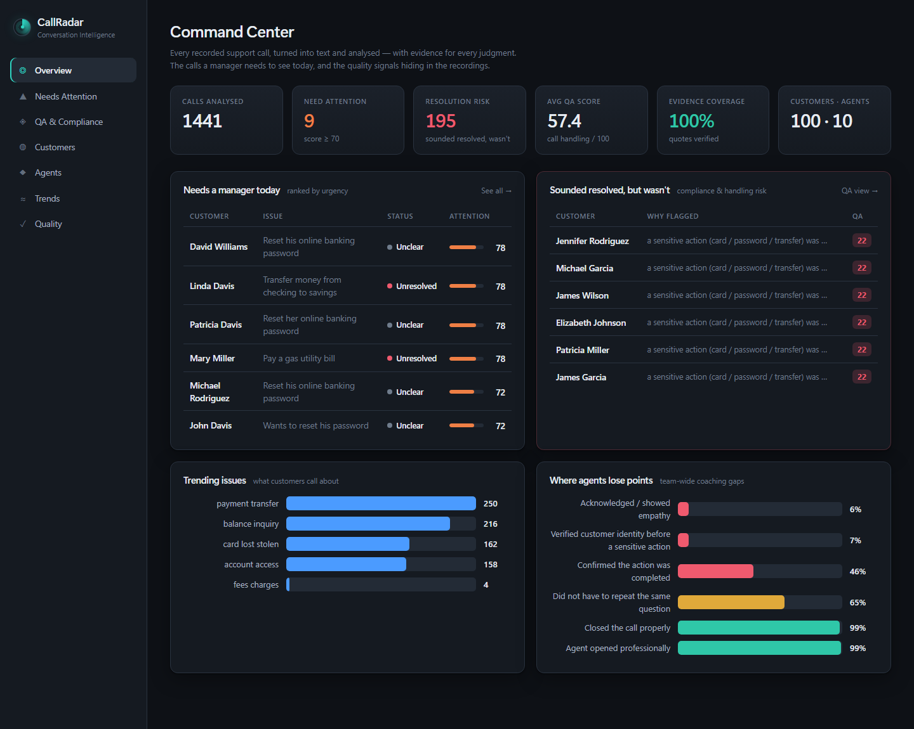
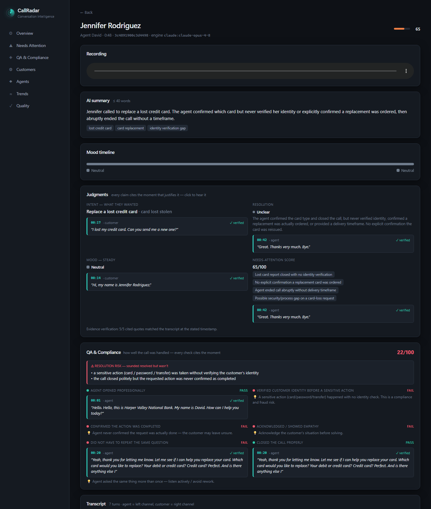
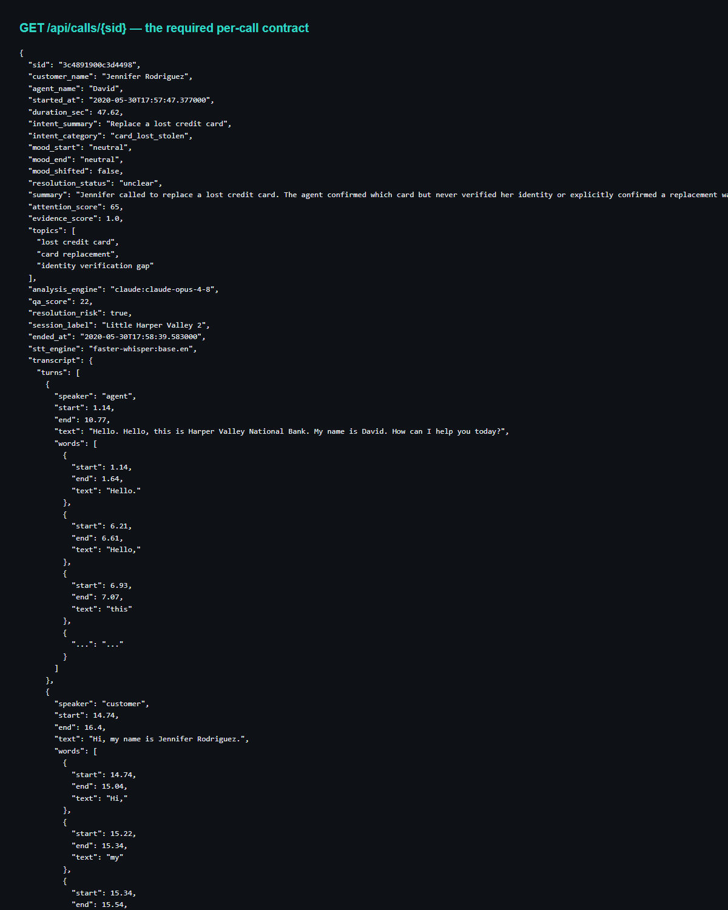
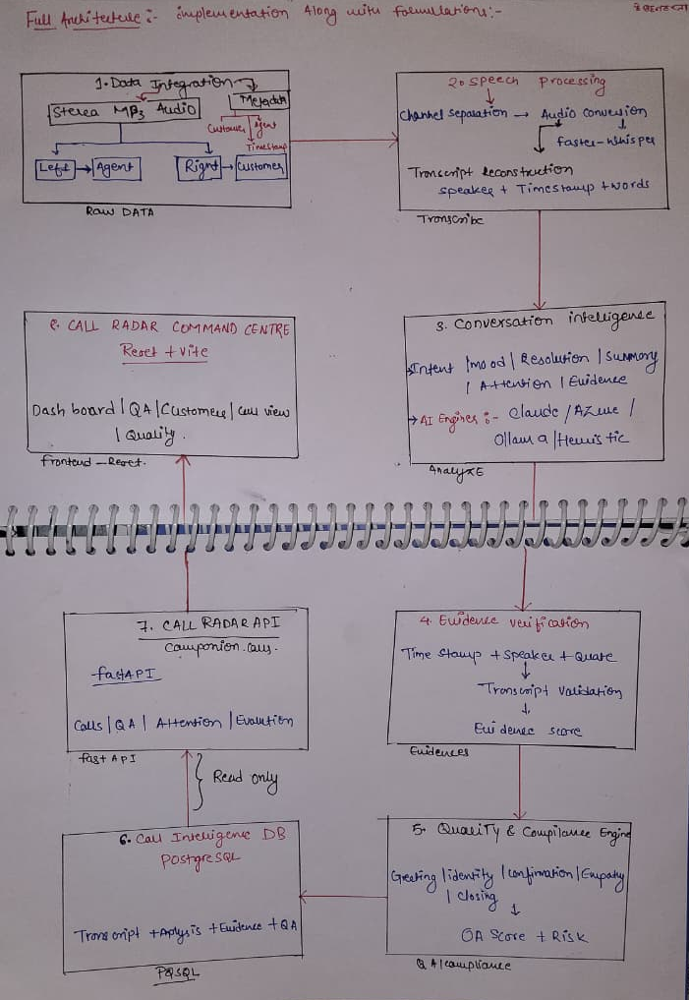
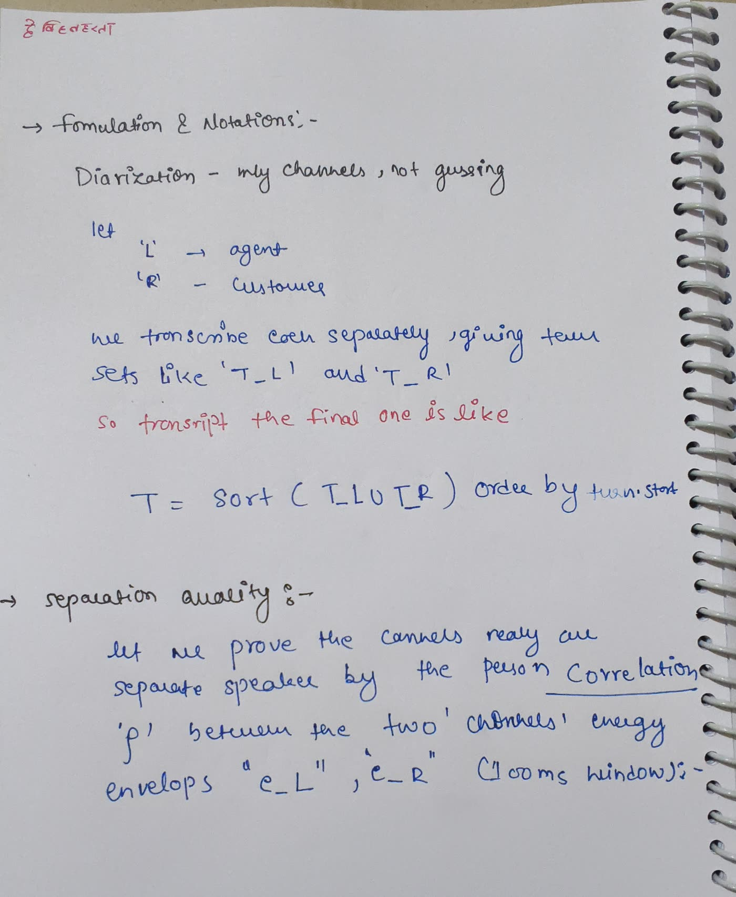
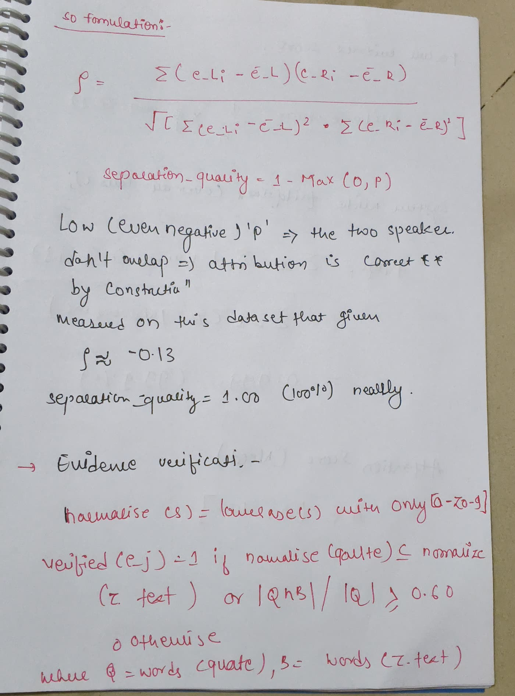
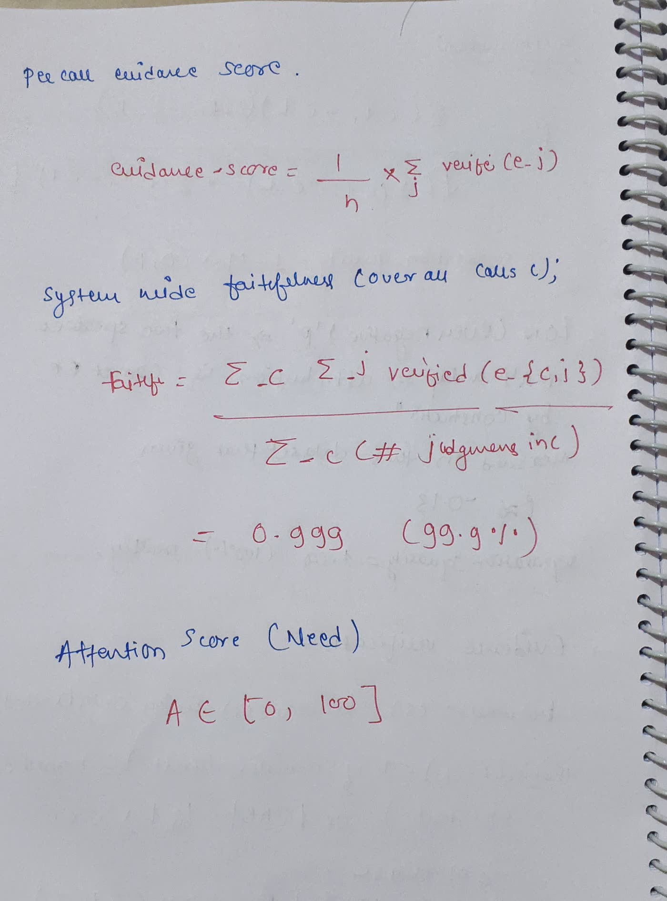
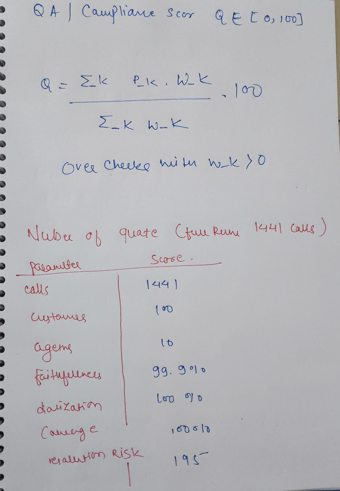

Companion for CallRadar & the Quality Checks
Turn 1,441 raw support-call recordings into a manager's dashboard — who called, what they wanted, how their mood moved, whether it was really resolved, which calls need attention today — and the exact moment on the call that proves every judgment.
You get audio, not transcripts. Companion for CallRadar builds everything from the raw
.mp3s exactly as they come off the phone system — stereo, 8 kHz, agent on the
left channel and customer on the right. Every claim it makes is backed by a verified quote, and
it measures its own quality the way the 2025 research literature does.
Results at a glance
Measured on the full 1,441-call run, served live at /api/evaluation.
The brief, mapped to the implementation
Every requirement in the problem statement is implemented and verified on all 1,441 calls.
| The brief requires | ✔ | Where |
|---|---|---|
| Speech to text | ✓ | pipeline/transcribe.py — faster-whisper |
| Work out who said what | ✓ | Channel-split (agent = L, customer = R) — correct by construction |
| Turn-by-turn with timings | ✓ | Interleaved turns + word-level timings |
| Per customer: name, history, recording + transcript | ✓ | Customers page → /api/customers |
| Per call: intent | ✓ | analysis.intent |
| Per call: mood + the point where it shifted | ✓ | analysis.mood.shift.timestamp + mood timeline |
| Per call: resolution | ✓ | analysis.resolution.status |
| Per call: summary (≤ 40 words) | ✓ | Validated ≤ 40 words on 100% of calls |
| Needs a manager's attention, ranked | ✓ | Needs Attention page → /api/attention |
| Which issues are trending | ✓ | Trends page → /api/trends |
| Per-agent volumes, handle times, outcomes | ✓ | Agents page → /api/agents |
| Every judgment cites the moment — timestamp + words | ✓ | Every judgment carries evidence{timestamp, quote, speaker} |
| Do not re-transcribe on every request | ✓ | Precomputed once → PostgreSQL; the API only reads |
| Git repo + README to run from scratch | ✓ | This repo; docker compose run --rm pipeline |
Why we stand out
Most entries produce a transcript, an LLM summary, and a table. Here's the difference:
| A typical entry | Companion for CallRadar |
|---|---|
| An ML diarizer guesses the speakers, and gets some wrong | Splits the stereo channels — attribution is correct by construction. Auto-corrects the ~37 reversed-channel recordings |
| The model says it's citing a moment; nobody checks | Every quote is verified against the transcript at its timestamp — 99.9% faithfulness measured |
| "It works" / an unverifiable "X% accurate" | We measure ourselves the way the 2025 research does — faithfulness, diarization, coverage |
| Summarises what was said | Flags the calls that sounded resolved but weren't — money moved with no identity check |
| Needs API keys / a specific cloud | Runs fully offline; add Claude/Azure to upgrade |
The dashboard & the API
Frontend — the manager's Command Center

Per-call view — recording, transcript, evidence, mood, QA

Backend — the required API contract

GET /api/calls/{sid} returns the transcript with speakers + timings, intent, mood + shift, resolution, ≤40-word summary, 0–100 attention score, QA, and the evidence behind every judgment.Architecture
Data flows one way at build time (audio → transcript → analysis → QA → Postgres) and one way at request time (Postgres → API → UI). The two are decoupled: the pipeline can be re-run or swapped to a different engine without touching the serving layer, and the API never pays transcription cost.
recordings (.mp3, 8kHz stereo) metadata (.json)
│ │
▼ │
(1) TRANSCRIBE transcribe.py │
split channels (ffmpeg) → whisper │
per channel → interleave by time │
+ reversed-channel auto-correction │
│ transcript (speakers + timings) │
▼ ▼
(2) ANALYZE analyze.py (pluggable engine: claude | azure | azure-claude | ollama | heuristic)
intent · mood+shift · resolution · summary · attention(0-100) · EVIDENCE{ts,quote,speaker}
│
▼ (2b) VERIFY EVIDENCE — each quote checked vs transcript → evidence_score
(3) QA / COMPLIANCE qa.py
identity? action confirmed? empathy? repeat? close? → qa_score(0-100) + resolution_risk
│ write once
▼
PostgreSQL (one 'calls' table: transcript + analysis + qa)
│ read only (never re-transcribe)
▼
FastAPI (backend) ◀────▶ React + Vite (frontend)
EVALUATE evaluate.py reads the DB → faithfulness · diarization · coverage → Quality pageHand-written design & formulation
The full architecture, the logic behind each stage, and every formula — worked out by hand.





The pipeline — five stages
1 · Transcribe (channel-split diarization)
The recordings are stereo — agent left, customer right. Instead of guessing "who spoke" with an ML diarizer, we split the channels and transcribe each independently, then interleave by timestamp. Speaker attribution is correct by construction.
# c0=c0 = left(agent), c0=c1 = right(customer)
ffmpeg -i call.mp3 -af "pan=mono|c0=c0" -ar 16000 -ac 1 agent.wav
all_turns = transcribe(agent_wav, "agent")
all_turns += transcribe(cust_wav, "customer")
all_turns.sort(key=lambda t: t.start) # rebuild the real conversation2 · Analyze (evidence-cited, pluggable engine)
A single tool whose input schema is the analysis schema forces the model to return every
judgment with an {timestamp, quote, speaker} evidence object. Runs with no key
(heuristic), or upgrades to Claude / Azure OpenAI.
2b · Verify evidence
Each cited quote is checked against the transcript turn at that timestamp (fuzzy, ≥ 60% word overlap). Unverified citations are flagged. This is how we defend against the "wrong evidence scores negative" rule.
3 · QA / compliance
A bank-grade rubric scored from the transcript: identity verified before a sensitive action? action confirmed? empathy? repeated question? professional open/close? → a 0–100 QA score and a resolution-risk flag for calls that closed politely but were never actually completed.
4 · Store & 5 · Serve
Everything is written once into a PostgreSQL calls table. FastAPI only reads — it never
re-transcribes on a request.
Measurement criteria & results
We do not claim a single brittle "accuracy %". The conversation-intelligence and LLM-evaluation literature (WER for speech; FaithBench / FaithJudge / LLM-as-a-judge, 2025) measures faithfulness — is a claim grounded in the source? — and warns that exact-match scoring punishes good-but-reworded answers. So we measure on the axes that matter:
| Criterion | What it means | How it's computed | Result |
|---|---|---|---|
| Faithfulness | Is every judgment backed by a quote that really appears at the cited time? | verified / total judgments (≥ 60% word overlap) | 99.9% |
| Diarization separation | Are the two speakers genuinely separate? | 1 − max(0, ρ), ρ = cross-channel energy correlation | 100% |
| Coverage | Is every output well-formed? | summary ≤ 40 words, valid vocab, attention ∈ [0,100], shift ts present, transcript present | 100% |
| Avg QA score | How well were calls handled? | weighted compliance checks → 0–100 | 57.4 |
| Resolution risk | "Sounded resolved but wasn't" | compliance / confirmation rule | 195 |
Team-wide coaching gaps (from the QA layer)
Formulas & notation
Diarization — separation quality
Let L = agent channel, R = customer channel; transcribe each into turn sets
T_L, T_R. The final transcript is T = sort(T_L ∪ T_R) by
turn.start. To prove the channels are genuinely separate speakers, take the Pearson
correlation ρ between the two channels' energy envelopes e_L, e_R (100 ms windows):
Low (even negative) ρ ⇒ the two speakers don't overlap ⇒ attribution is correct by construction.
Evidence verification & faithfulness
Each judgment j carries evidence e_j = (timestamp, quote, speaker).
Verification finds the transcript turn τ at that timestamp+speaker and accepts if the quote
appears in the turn or shares ≥ 60% of its significant words:
Needs-attention score A ∈ [0, 100]
QA / compliance score Q ∈ [0, 100]
Each check k has a pass flag p_k ∈ {0,1} and a weight w_k
(identity = 3, action = 2, greeting / empathy / no-repeat / close = 1 each):
Example output (real, from the API)
A payment/card call that looks fine — polite close — but the system catches the compliance failure:
{
"customer_name": "Jennifer Rodriguez",
"intent_summary": "Replace a lost credit card",
"mood_start": "neutral", "mood_end": "neutral",
"resolution_status": "unclear",
"summary": "Jennifer called to replace a lost credit card. The agent confirmed
which card but never verified her identity or explicitly confirmed a
replacement was ordered, then abruptly ended the call.",
"attention_score": 65,
"qa_score": 22,
"resolution_risk": true,
"evidence_score": 1.0,
"resolution": {
"status": "unclear",
"evidence": { "timestamp": "00:42",
"quote": "Great. Thanks very much. Bye.",
"speaker": "agent", "verified": true }
},
"qa": {
"resolution_risk_reasons": [
"a sensitive action (card / password / transfer) was taken without
verifying the customer's identity"
]
}
}Every field is backed by a verified quote — click any timestamp in the dashboard and it jumps the audio to that exact second.
Run it from scratch
Prerequisites: Docker + Docker Compose. Nothing else. Runs with no API keys.
# 1. Load the dataset into ./data (accepts the zip OR an extracted folder)
python scripts/load_data.py <callradar-data.zip>
# 2. Bring up Postgres, the API, and the dashboard
docker compose up -d --build
# 3. Turn the recordings into transcripts + analysis (THE key step)
docker compose run --rm pipeline
# 4. Add the QA / compliance layer + quality metrics
docker compose run --rm pipeline python -m pipeline.compute_qa
docker compose run --rm pipeline python -m pipeline.evaluate
# 5. Open the dashboard → http://localhost:3000 (API → http://localhost:8000)ANTHROPIC_API_KEY or the
AZURE_OPENAI_* / AZURE_CLAUDE_* variables and run
docker compose run --rm pipeline python -m pipeline.enrich --top 100 to upgrade the
highest-attention calls to LLM-grade analysis. The engine is model-agnostic.API reference
| Endpoint | Returns |
|---|---|
GET /api/calls/{sid} | Full per-call: transcript (speakers + timings), intent, mood + shift, resolution, ≤40-word summary, attention score, QA, evidence |
GET /api/customers | Every customer with call counts and peak attention |
GET /api/customers/{name} | A customer's full call history |
GET /api/attention | Ranked "needs a manager's attention today" |
GET /api/qa | QA-risk-ranked calls ("sounded resolved but wasn't") |
GET /api/qa/stats | Team-wide QA metrics and coaching gaps |
GET /api/evaluation | System quality: faithfulness, diarization, coverage |
GET /api/trends | Trending issues across all calls |
GET /api/agents | Per-agent volumes, handle times, and outcomes |
GET /api/audio/{sid}.mp3 | The playable recording |
GET /api/stats | Dashboard headline numbers |
Live links & repository
| Resource | Link |
|---|---|
| GitHub repository | github.com/SAHILKOSHRIYA/Companion_Radar_call_01 |
| Dashboard (local) | http://localhost:3000 |
| API (local) | http://localhost:8000 |
| Detailed Step-by-Step Architecture | overview-architecture.html · ARCHITECTURE_OVERVIEW.md · PDF |
| Architecture & design | architecture.html · ARCHITECTURE.md |
| Formulas & notation | formulas.html · HANDWRITTEN_REFERENCE.md |
| Demo walkthrough | demo.html · DEMO.md |